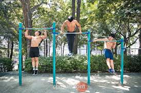
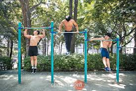

Muscle Ups
The Muscle-Up is an advanced strength training exercise, within the domain of calisthenics. It is a combination routine of a radial pull-up followed by a dip. Variations exist for the rings as well as the bar.
The Muscle-Up is an advanced strength training exercise, within the domain of calisthenics. It is a combination routine of a radial pull-up followed by a dip. Variations exist for the rings as well as the bar.